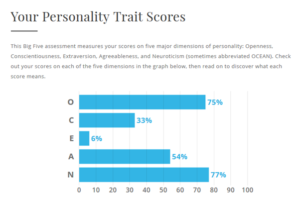

Hello, my name is Johnny Le. I am 23 years of age and my background is Vietnamese. I can speak 2 languages - English and Vietnamese. I am currently studying Bachelor of Business majoring in Information Systems
and in my final semester. I have worked in various retail jobs as a teenager and am now working in the banking industry as
a customer service specialist within a branch. One of my hobbies is going to the gym and I have a pet dog whose breed is Maltese x Shihtzu.
Interest in IT
My interest in IT began when I was very young as I was always interested in technology due to games. What makes IT so interesting to me is because of my curiosity
about how everything works. As I am an introvert possessing an analytical & curious mindset, I have a natural interest in IT and plan to work in IT as my career.
I have had experience in SQL, HTML, CSS and a bit of Python through my previous classes which I really enjoy and hope it will help me in my future career endeavours.
I also have basic experience in Linux, routers and networks.
This position is for a Business Analyst at Kogan. This role involves interacting with all areas of the business, analysing and visualising data,
developing and implementing solutions through critical thinking and clever decision-making. The reason for my interest in this position is because of
my career goal to be a Business Analyst and my interest in eCommerce. I have also done a personality test which suggests jobs and one of it was being
an Analyst as I possess and analytical mindset. The qualifications required for this position is to have a degree in a similar field such
as IT, engineering, business and analytics. It also you requires you to have an exceptional record of academic results. You are required to have critical thinking
skills, being able to communicate complex ideas and communicate affectively within all areas of the business. In terms of programs and systems that you are required
to know, you need to know Microsoft Excel on an advanced level, being able to use BI platforms such as Tableau or Power BI and able to use a relational database
management systems such as SQL. The skills I currently possess is having critical thinking skills, great problem-solving skills and having high attention to detail.
I know how to use SQL and Excel well however not in an advanced level that is needed. I have good communication skills, but it is something that I need to improve
in to become an effective communicator to all levels in the business. I am currently on my way to getting a University Degree, graduating at the end of 2020.
The job requires an outstanding academic record, which I hopefully should achieve by the end of 2020. So far, most of my results have been awarded with HD.
In order to gain the required system and program skills for this position I will need to self-study or do an online course to learn Microsoft Excel, BI platforms
and SQL and possibly gain a certification from it. My communication skills will naturally develop as I continue working in jobs where I’m required to talk effectively.
Personal Profile
Myer Briggs Test
Big Five Personality Test

With the Big Five Personality test, it shows that I possess a mindset where I am able to think abstractly and in complex ways. I am higher than average in my
Openness score which I got 75% compared to the 58% average score. I also scored really high in Neuroticism getting a 77% which means I have a tendency to
experience negative emotions. I find that this is due to me being very introverted and always overthinking.
My results of my learning style show that I am a visual leaner. It is best for me to learn by sight through making flashcards, writing down key ideas, or colour code things.
I do sometimes find it hard to follow directions. My eyesight at the moment is fine and probably doesn’t need to be checked as suggested. Although it does say that I am attracted
to colours and it may assist in my learning, I am actually colourblind which I find is pretty amusing.
Job Assessment Test
This test here was an online job assessment test I did recently which explains really well my learning style which is why I chose to include it here.
The results emphasise that I like working with numbers, are a quick thinker and being able to find solutions to problems.
Overall, with these test results it is shown that I am a person who is quite reserved however I can work with numbers and complex issues.
My mind is able to come up with innovative solutions when faced with a rather complex problem. These results will potentially impact the way I work in teams.
As I am a person who enjoys working alone and autonomously, I won't be able to work in a team in a prolonged length of time and I will prefer working by myself.
If I am assigned a task to complete, I will be able to get it done within the agreed deadline. When forming a team, I am pretty flexible with whoever I get,
however I would like a person who is a bit extroverted to be able to balance out our team. I am probably not great in big teams where there are discussions though
it will be fine if it is a smaller capacity.
Project Idea
Overview
An IT project that I would like to do is a fingerprint verification system. This will be used for more systems and programs rather than just with phones.
This can be used to log in to accounts, access your banking accounts, used as a payment processer rather than a PIN. This will help it make more convenient
for people as they don’t have to remember so many passwords, and it is much harder to hack due to everyone having a unique fingerprint.
Motivation
My motivation for this project was that I found it frustrating trying to remember so many passwords and PINs, as well as carrying around keys and cards,
and found the fingerprint verification on phones a convenient solution and would like to implement it in more areas in life. Currently, the fingerprint
is an exceptionally unique method of human identification. It is already in use in smartphones and have been used to identify individuals in crime scenes.
It will be extremely practical and convenient since rather than using a key or carrying something around, your fingers act like the key and you would not
lose it like you would with a key. It can also reduce costs for system management and visitor identification, removing the need for cards or keys.
Description
The fingerprint verification system will be an identification software which store the fingerprint data of a person. Whenever a fingerprint authentication is
required, the software will match it with what we have in the database. This software can be integrated with other systems and also can be used as an additional
verification method rather than a standalone verification to increase security for higher risk cases. The identification method is performed in three stages:
A picture is taken of the fingerprint electronically. The end result will turn out to be a black and white photograph of the ridges in the fingerprint.
The fingerprint then is translated into a numerical code, which stores the fingerprint’s unique data. Such characteristics in code are the arches and loops
and their distance from each other.
The numerical code is then compared with the stored data to find a match.
There are drawbacks since that fingertips is flexible, sometimes making it hard for identification. The dryness of the skin ,
temperature and the force in which the finger is pressed against the reader are all factors that can affect the authentication. It
also may be very costly initially to be able to develop this software.
Tools and Technologies
Computer
Programming Software
Windows Operating System
Database System (Microsoft Access Database)
Microsoft Visual Studio
USB
Fingerprint Scanning Hardware
Skills Required
For this project, it will require me to know more about system verification and how it works, programming and ethical
hacking in order to prevent fraud. Would also require business/marketing skills in order to provide it to the public.
Although, this may run into some issues regarding its feasibility and people not agreeing to use their fingerprints.
It will require large funding and capital in order to provide to the mass market. This does not need to be the only
verification method, as those with higher risk, can use it as apart of a 2-factor authentication.
This project would require having advanced level of programming and possibly algorithms knowledge.
Also require complex IT skills to be able to develop the software, the interface and connecting it with the hardware.
Would also require database management skills to be able to create, maintain and delete fingerprint records.
Also great to have information security skills to protect the system from being hacked.
Outcome
If the project is successful, it will be able to change the way people access their accounts or entries to buildings.
It will help cut costs of many businesses who require cards or access keys to be able to access buildings.
Additionally, it may reduce the amount of fraud and theft due to people not requiring to carry around a key/card.